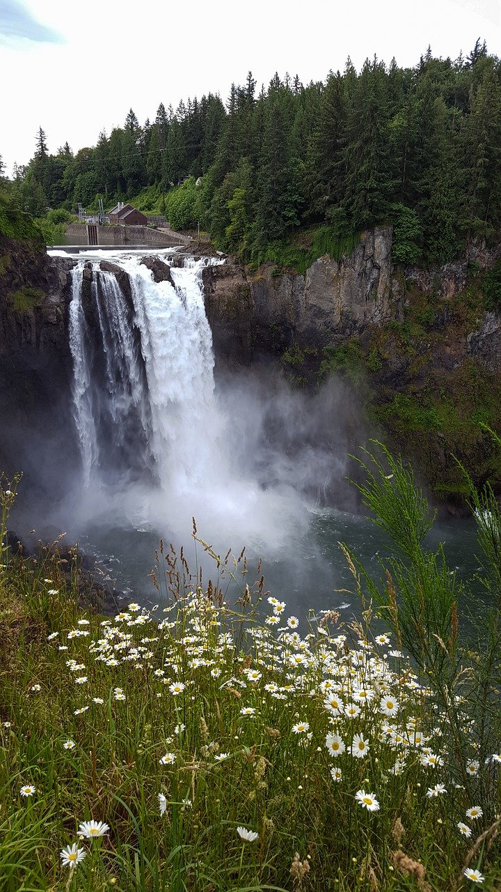
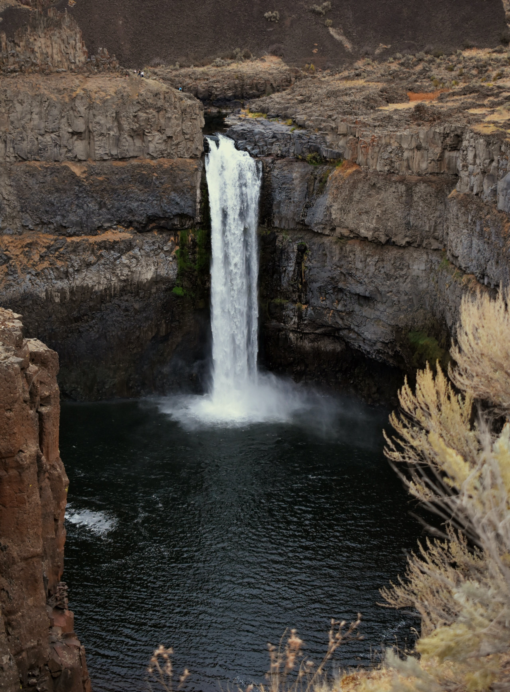

Mount Rainier and its associated geologic and glacial features. At a height of 14,410 feet, Mount Rainier is the highest volcanic peak in the contiguous United States. It has the largest alpine glacial system outside of Alaska and the world's largest volcanic glacier cave system (in the summit crater).
Around 500,000 years ago, Mount Rainier started to grow atop the eroded remains of an earlier ancestral Mount Rainier that was active 1-2 million years ago. The modern edifice grew as a series of four alternating stages of volcanic activity, averaging a little more than 100,000 years duration.
Captain George Vancouver of the British Royal Navy observed the mountain while surveying the Pacific coast in 1792 and decided to name the mountain after his friend, Rear Admiral Peter Rainier.
Mount Baker is the only U.S. volcano in the Cascade Range that has been affected by both alpine and continental glaciation. The stratovolcano is composed mainly of andesite lava flows and breccias and was largely formed prior to the most recent major glaciation (Fraser Glaciation), which occurred between about 25,000 and 10,000 years ago.
Indigenous peoples have known the mountain for thousands of years, but the first written record of the mountain is from Spanish explorer Gonzalo Lopez de Haro, who mapped it in 1790 as Gran Montaña del Carmelo, "Great Mount Carmel".
It is also one of the snowiest places in the world; in 1999, Mount Baker Ski Area, located 9 mi (14.5 km) to the northeast, set the world record for recorded snowfall in a single season—1,140 in (29 m; 95 ft).
Mount St. Helens is a volcano located in southwestern Washington state. It’s the most active volcano in the Cascade Range, a mountain range that extends from British Columbia through Washington and Oregon to northern California. For thousands of years, Mount St. Helens has alternated between times of explosive eruptions and long periods of relative calm.
But on May 18, 1980, after experiencing a couple of months of earthquake activity and weak volcanic flare-ups, Mount St. Helens erupted violently, decimating everything in its path. The 1980 volcanic explosion claimed more than 50 lives, destroyed thousands of acres of land and wiped out entire animal and plant communities.
In 1982, Congress set aside 110,000 acres of land around Mount St. Helens and within the Gifford Pinchot National Forest for the National Volcanic Monument. The Monument was established for research, recreation and education.
WATERFALLS

Snoqualmie Falls is arguably the most famous waterfall in Washington. Less than an hour from the Emerald City, Snoqualmie is also one of the best waterfalls near Seattle. Visitors today can appreciate the gravity of the 270-foot falls with an interpretive trail and lodge nearby.

This ancient, Ice-Age waterfall is in Eastern Washington, forty miles north of Walla Walla. Designated as Washington's state waterfall, Palouse Falls incorporates a 200-foot drop, a massive bowl, and a stunning gorge. On the western banks of the Palouse River and below the falls, Palouse Falls State Park is the best place to go for visitor resources.

On the Olympic Peninsula of western Washington, Marymere Falls is one of the most popular waterfalls in Olympic National Park. The falls also provide one of the park's best hiking trails. The trailhead for the falls is on the north side of the peninsula, 30 minutes west of Port Angeles on Highway 101.